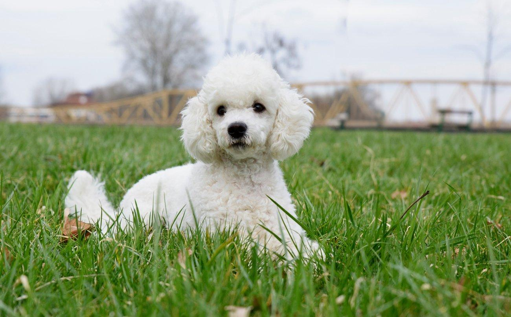
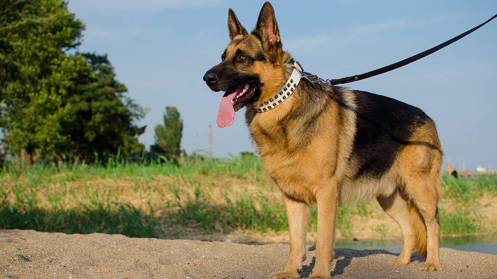
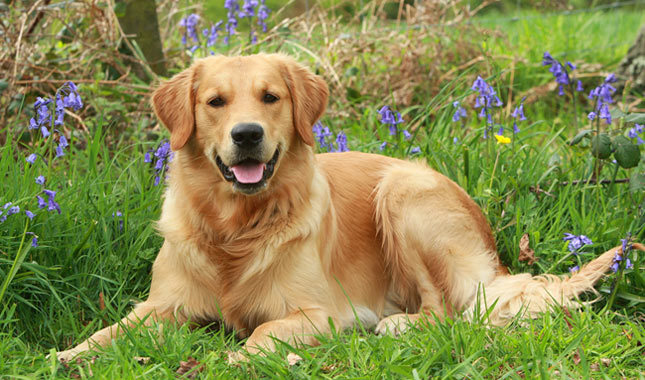
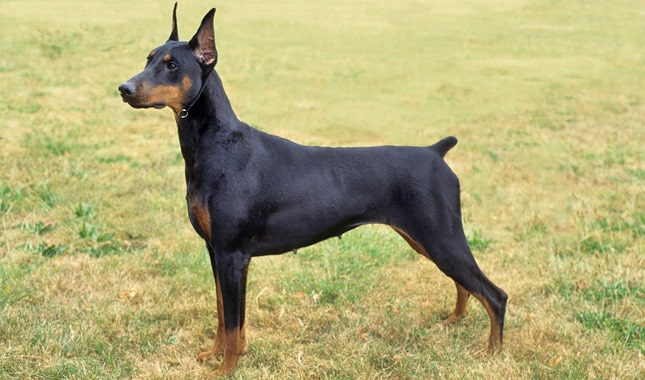

1. Border Collie
Nhắc đến giống chó khôn nhất thì Border Collie xếp ở vị trí đầu tiên. Border Collie rất thông minh và đồng thời cũng đáng yêu và ngây ngô chẳng kém bất cứ loài chó nào mà bạn biết. Vậy nên ngày có càng nhiều người thích nuôi Collie trong nhà để có thêm nhiều niềm vui trong cuộc sống.

2. Poodle
Poodle được nhiều người biết đến với hình dáng của 1 chú chó nhỏ nhắn và vô cùng đáng yêu. Nhưng hiếm ai biết rằng, ẩn sau vẻ bề ngoài đó là một bộ óc với trí thông minh thuộc hàng đỉnh của thế giới. Chúng còn thông minh đến nỗi, vào thời kỳ chiến tranh quân đội đã sử dụng huấn luyện để phục vụ cho nhiệm vụ chuyển thông tin trên chiến trường.

3. Becgie
Becgie là hiện thân của những chú chó cảnh vệ vừa anh dũng vừa thông minh. Becgie cũng trực tiếp xuất hiện trong công cuộc tìm và truy bắt tội phạm nguy hiểm. Đôi chân nhanh nhạy, cái mũi thính cùng bộ não thông minh – Những chú chó cảnh sát này luôn được ngưỡng mộ trên toàn thế giới.

4. Golden Retriever
Golden được biết đến là loài chó săn vừa thông minh lại rất nhạy bén. Bạn đừng để vẻ ngoài dễ thương và “lông lá” của chúng đánh lừa. Chúng vừa có cái mũi rất thính, đôi tai nhanh nhạy, khả năng thực hiện nhiệm vụ, nghe lời tuyệt đối lại ngoan ngoãn dễ bảo vô cùng. Thử tưởng tượng nhà bạn sẽ vui thế nào nếu có sự xuất hiện của một chú Golden tuyệt vời như vậy.

5. Doberman Pinscher
Doberman là loài chó thông minh nổi tiếng nữa của nước Đức. Chúng được biết đến là loài chó rất thông minh, cực nhạy bén nhưng lại có một nửa tính cách hung dữ. Doberman được bình chọn đứng số 1 trong top những giống chó giữ nhà tốt nhất bởi chúng gan dạ, không biết sợ bất cứ thứ gì.
